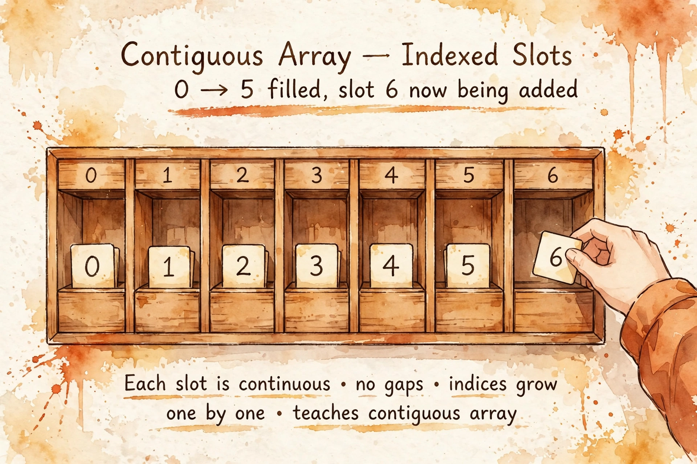

Monday, September 28, 2026
The one bargain the array strikes — O(1) access bought with contiguity, which makes the middle expensive to change. Address arithmetic, the doubling trick, in-place read/write pointers, and prefix sums: the four ideas the next 46 lessons keep reusing.

Builds on: L7 (Big-O, Ω, Θ) — the one algorithms lesson already in your pocket. The exact idea reused: the growth-rate vocabulary. Every cost in this lesson is stated as a function of n, and you already know what the notation promises. Today that language lands on the structure everything else is built from.
Picture a row of wooden cubby-holes in a mailroom, shoulder to shoulder, numbered 0, 1, 2, … The mailroom has exactly one rule: every cubby is the same size, and there are no gaps between them. Someone asks for the card in cubby 4,217. You don't walk past 4,217 cubbies. You multiply: the start of the row, plus 4,217 times the width of one cubby. One multiplication, one jump. That is the entire array.
In memory the formula is address(arr[i]) = base + i × sizeof(element). Same-size
elements plus zero gaps means position is arithmetic, and arithmetic is O(1). This is why arrays
are the only structure with true random access — and it's also why the middle is expensive to
change: to insert into cubby 3, you must physically slide every card after it one slot to the
right. Contiguity is both the superpower and the tax. Everything downstream in this track is a
response to one of those two facts.
One more reason contiguity matters, from the ML world: contiguous data is what hardware loves. Sequential slots prefetch cleanly, vectorize under SIMD, and coalesce on GPUs — the same reason tensors want to be contiguous. Arrays aren't just the simplest structure; they're the layout the machine is designed to feed on.
Two derivations. First, indexing: base + i × w is a constant number of operations
for any i, so index read/write is Θ(1). Second, insertion at position k: you shift n − k elements,
each a constant-time move, so the cost is Θ(n − k), worst-case Θ(n) when k = 0. The cost table,
derived rather than memorized:
| Operation | Cost | Why |
|---|---|---|
Read / write a[i] | Θ(1) | address arithmetic |
| Append (dynamic array) | O(1) amortized | capacity doubles (below) |
| Insert / delete at index k | Θ(n−k) | shift everything after k |
| Search, unsorted | Θ(n) | nothing to do but scan |
| Search, sorted | Θ(log n) | binary search (L18) |
| Space | Θ(n) | one slot per element |
Now the doubling trick — a preview of L10 (amortized analysis). A Python list is a dynamic array: fixed capacity underneath, and when an append overflows it, Python allocates a geometrically bigger block (~9/8× in CPython; only "geometric" matters) and copies everything over. Count the total work of n appends: n cheap appends, plus copies at sizes 1, 2, 4, 8, …, 2m with 2m < n. That series sums to 2m+1 − 1 < 2n. Total < 3n operations for n appends — so each append costs O(1) amortized. Expensive moments exist (the occasional copy), but averaged over the sequence, append is constant time. Every dynamic array in every language leans on this one series.
Two problems carry ninety percent of array interviews. First, in-place work with read/write pointers — the seed of L13 (two pointers):
def remove_duplicates_sorted(nums):
# Sorted array -> duplicates are adjacent. Two pointers:
# `read` scans every element; `write` marks where the next
# unique value belongs. Invariant: nums[0..write] holds the
# deduplicated prefix, in order, with no gaps.
# Time Theta(n), space O(1).
if not nums:
return 0
write = 1
for read in range(1, len(nums)):
if nums[read] != nums[read - 1]:
nums[write] = nums[read]
write += 1
return write # length of the deduped prefix
Second, prefix sums — the classic trade of O(n) preprocessing for O(1) queries (full lesson at L16):
class RangeSum:
# Precompute P where P[i] = sum(nums[0..i-1]); P[0] = 0.
# Then sum(nums[l..r]) = P[r+1] - P[l] in O(1).
# Build O(n) once, answer each query O(1). The word
# "many queries" in a prompt is the prefix-sum tell.
def __init__(self, nums):
self.prefix = [0]
for x in nums:
self.prefix.append(self.prefix[-1] + x)
def query(self, left, right): # inclusive bounds
return self.prefix[right + 1] - self.prefix[left]
a[i-1], a[i+1]), windows over
positions.range(n) stops at n−1;
a[i-1] with i = 0 doesn't error, it silently wraps to the last element. The most
expensive bug in array code is the one that doesn't crash.if not nums before any
loop that touches a[i-1].for x in a skips
elements; indices shift under your feet.pop(0) / insert(0, x) are O(n) — if the ends are
hot, that's a deque (L4), not an array.a[i:j] is Θ(j−i); inside a loop it's a hidden
quadratic (the L7 trap, wearing an array costume).b = a shares storage; [[]] * n shares
one inner list n times.Connects to: L2 (Strings — arrays of characters, with encoding gotchas on top), L5 (Hash maps — arrays plus a hash function: O(1) by value instead of by position), L13 (Two pointers — today's read/write pattern grows up), L16 (Prefix sums — today's second technique, its own lesson), L18 (Binary search — only works because arrays give O(1) mid access), L24+ (Trees — a binary heap is an array in disguise: children of i at 2i+1, 2i+2), L36 (DP — the DP table is an array).
See the full presentation:
Arrays: The Foundation — Letter brief
Deep dive: Arrays — study guide
(layout diagrams, doubling math, pattern-spotting, self-test, references)
— The Infra Notebook